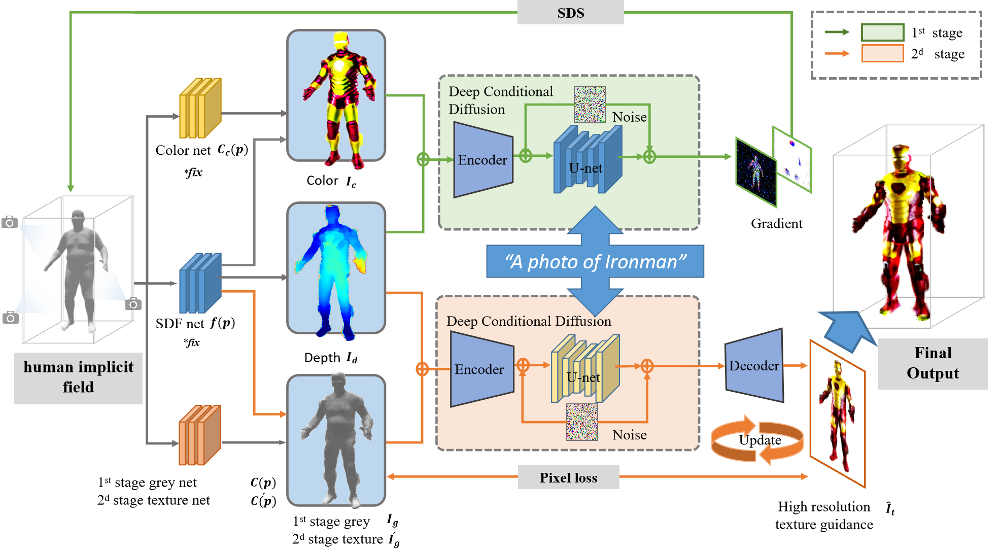

Framework
Using DcHuman In the first stage, we harnesses the powerful semantic priors of a pre-trained deep conditional diffusion model to provide global semantic feature supervision. Guided by score distillation sampling, the model achieves human feature generation with global consistency. Simultaneously, we employs an implicit human neural rendering module based on NeuS. Comprising human reconstruction and style generation modules, a shared weighted function is used to constrain human features while incorporating depth information into the latent space of the diffusion model. In the second stage, we reconstructs the texture generation module. Utilizing the color information obtained from the first stage as texture priors, the same pre-trained deep conditional diffusion model is employed. Through a strategy of conditional denoising and restoration, high-precision texture guidance images are recovered as part of an iterative refinement process for DcHuman's texture.
